【2026年初詣】實相寺・武田八幡宮・山縣神社！
三が日の混雑・駐車場・限定御朱印を徹底レポ！
☆實相寺（神代桜）☆
まずは北杜市の實相寺へ。ここは個人的に山梨で一番好きな場所で、毎年春の桜の時期には必ず訪れています。あの異次元な美しさは何度見ても感動しますが、冬の時期に来るのは今回が初めてでした。
冬の境内は春の喧騒が嘘のように静まり返っています。葉を落とした神代桜は、剥き出しになった幹や枝の形がダイレクトに見えて、2000年の樹齢を支える圧倒的な生命力を感じました。3日ということもあり人は2~3人しかおらず空いていて、落ち着いてお参りできたのが良かったです。
お参り中に笑ってしまった出来事がありまして、近くの工事現場に野生のサルが現れたこと。セキュリティを無視してうろうろしていて、センサーか何かがめちゃくちゃに反応していて工事に携わっている方々は大変だなと思わず笑ってしまいました。
もう一つ、自分ならではのハプニングも。香炉にお線香を立てようとしたのですが、置いてあったのがフリント式（火打ち石を回すタイプ）のライター。自分は喫煙をしないので、ライターの扱い方が分からず、火をつけるだけですごく時間がかかってしまいました。普段使い慣れない道具には苦戦しますね。春になったらまたあの満開の姿を見に来ようと思います。
★写真一覧★
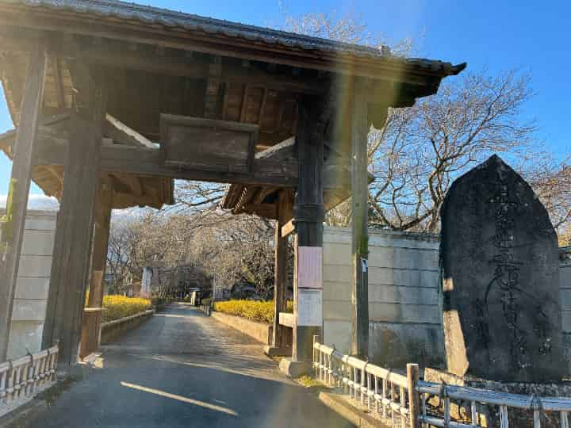
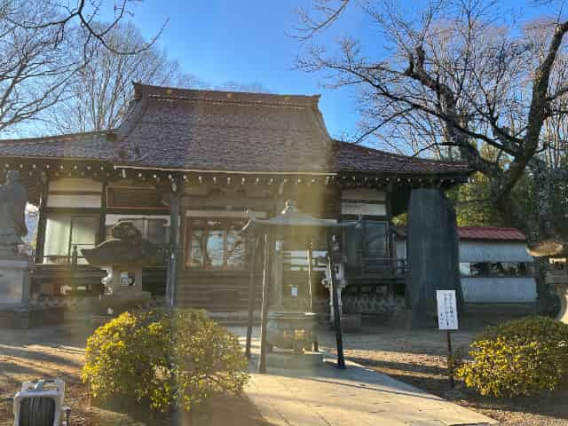
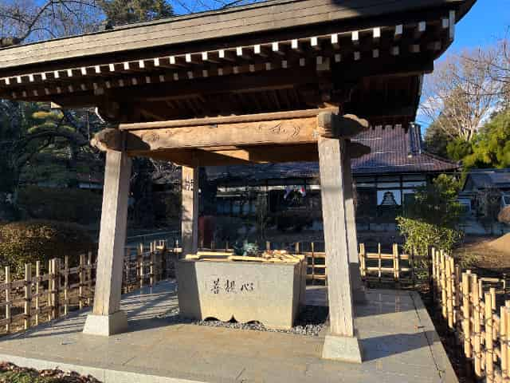
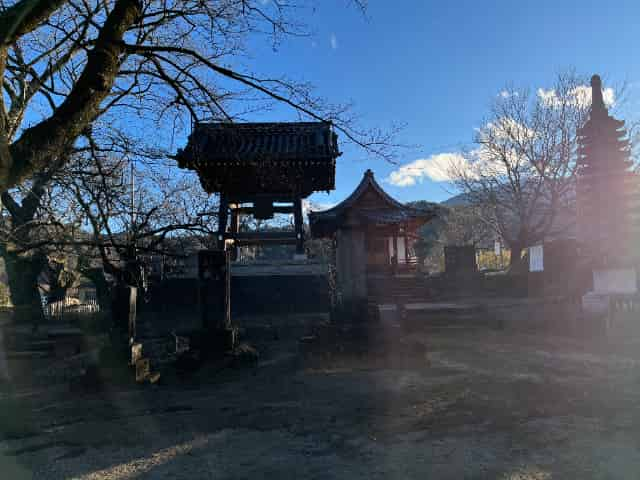
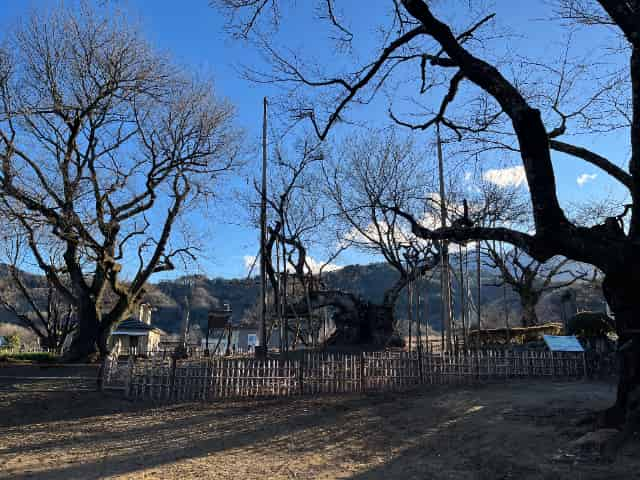
スポット情報：實相寺
- 所在地：山梨県北杜市武川町山高2763
- アクセス：須玉ICから車で約15分。
- 駐車場：徒歩1分以内にあり。桜シーズンは臨時駐車場が解禁。(500円ほど)
- 御朱印：あり。※今回は時間が合わず拝受していませんが、通常はいただけます。
- 公式サイトはこちらをクリック
☆武田八幡宮☆
続いて向かったのは韮崎市の武田八幡宮です。ここは信玄公ゆかりの地で、国指定重要文化財の本殿があるなど非常に歴史のある場所。立地も比較的良くてアクセスしやすいです。境内は落ち着いた雰囲気で、つい長居したくなるような心地よさがあります。
神社に向かう途中、ワンちゃんを連れたおばあさんとすれ違ったのですが、先行していたワンちゃんがなぜか自分の方へまっすぐ飛びついてきました。一瞬驚きましたが、人懐っこくてとても可愛かったです。新春からいい出会いがありました。
参拝客はそこそこいましたが、行列というほどではなく駐車場もしっかりあって穴場な感じ。ここの御朱印はデザインがかっこいいので楽しみにしていたのですが、今年は午年ということもあり、午が描かれた特別なクリアファイル付きの書き置き御朱印をいただけました。御朱印の馬は白と黒が選べ、自分は力強い黒い馬をチョイス。どちらも素敵で、記念に残る一社になりました。
★写真一覧★
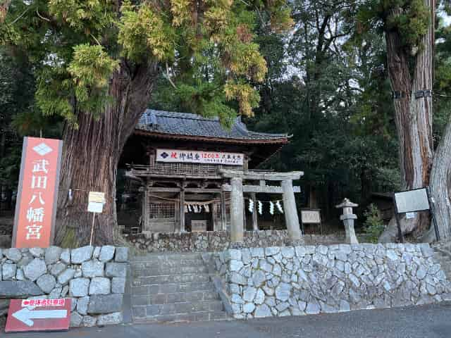
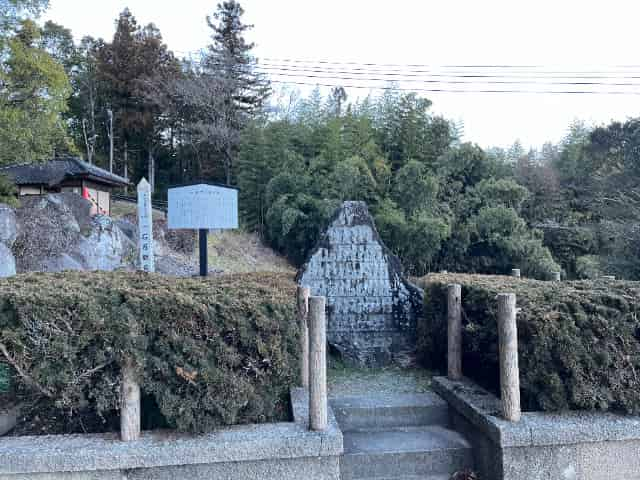
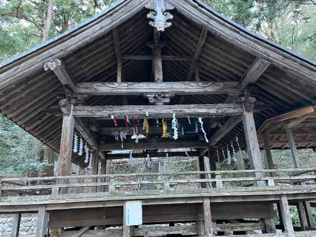
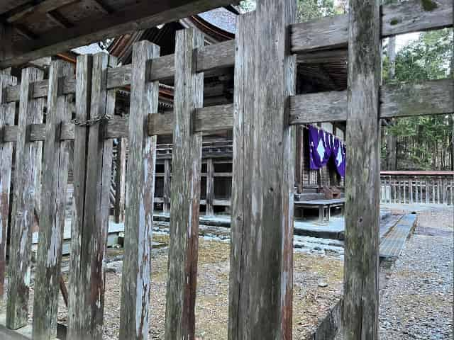
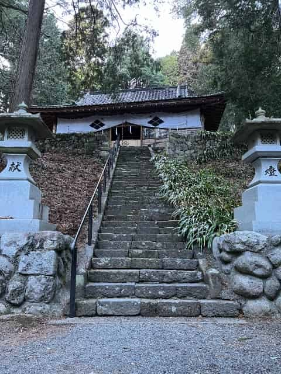
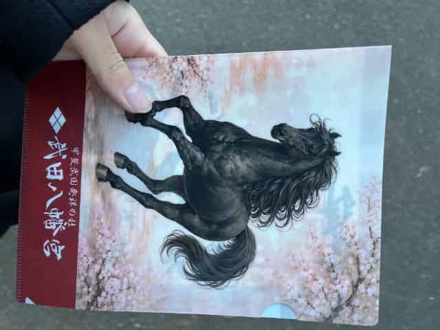

スポット情報：武田八幡宮
- 所在地：山梨県韮崎市神山町北宮地1185
- アクセス：韮崎ICから車で約15分。
- 駐車場：神社入口付近に無料駐車場あり。
- 滞在時間：約30分
- 御朱印：書き置きタイプ。午年は限定デザイン・ファイル付き。
- 公式サイトはこちらをクリック
☆山縣神社☆
最後は甲斐市の山縣神社です。夕方の4時半ごろに到着したのですが、この日訪れた3カ所の中で一番の賑わいでした。遅い時間にもかかわらず、駐車場はまさに満車寸前。なんとか一台分空きを見つけて滑り込むことができました。
境内には屋台も出ていて、お正月らしいワイワイした活気ある雰囲気。学問の神様として有名な山県大弐公を祀っていることもあり、受験生らしき人たちも多く見かけました。
そして一日の参拝を無事に終えることができました。最後に訪れた場所が一番賑やかだったので、お祭り気分で帰路につくことができ、充実した初詣巡りになりました。
★写真一覧★
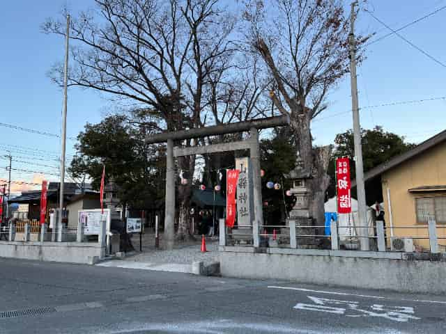
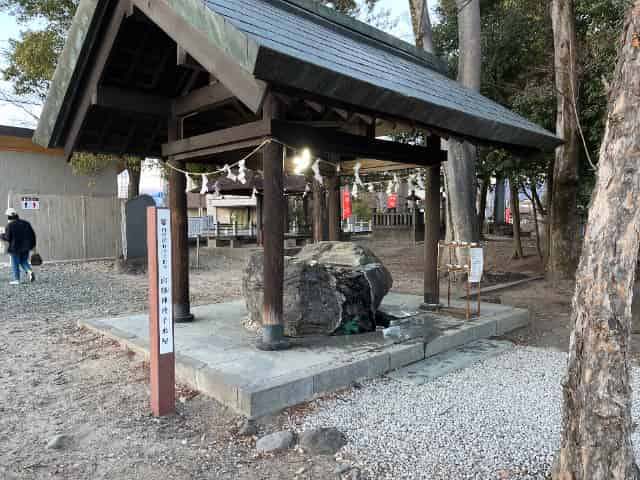
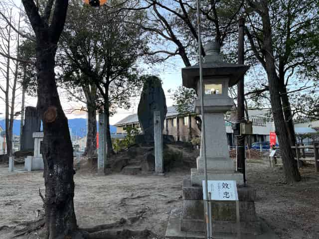
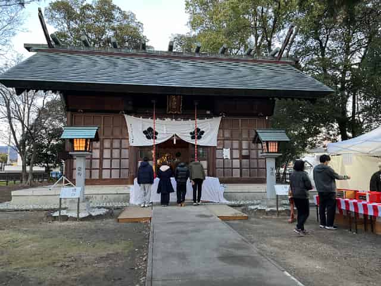
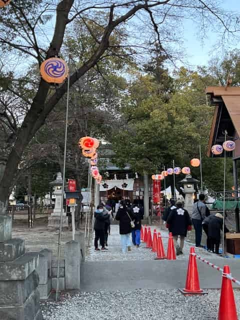
スポット情報：山縣神社
- 所在地：山梨県甲斐市篠原190
- アクセス：甲府昭和ICから車で約10分。
- 駐車場：境内横に無料駐車場あり。1月3日夕方でも混雑していました。
- 滞在時間:約25分
- 御朱印:あり。書置きタイプ(写真無し)
☆まとめ☆
1月3日の山梨三社寺巡り。実相寺の静寂からサルの乱入、武田八幡宮でのワンちゃんとの遭遇、そして山縣神社の活気まで、盛りだくさんな一日でした。それぞれの神社の空気感の違いを楽しめましたし、午年ならではの御朱印もいただけて大満足です。後日新たに複数個所巡りましたので追って投稿していきます。よければ閲覧の程よろしくお願いいたします！
前の記事へ ← ホームへ戻る 次の記事へ